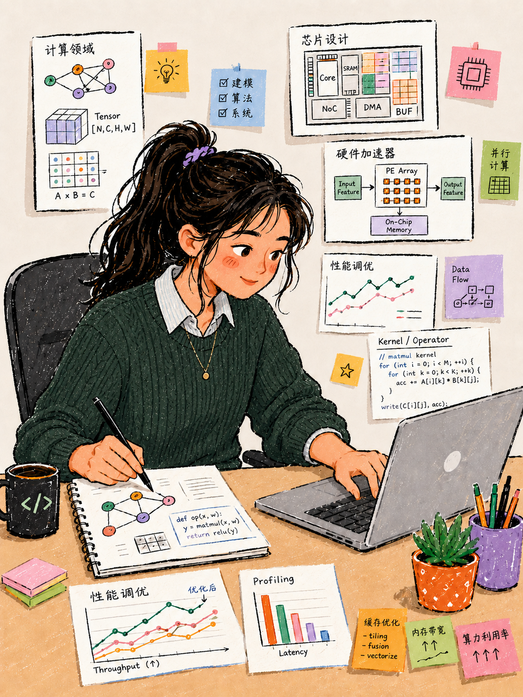

用户业务
PyPTO 高阶算子开发与性能调优，覆盖大模型 RoPE / attention 融合算子交付与通用算子 profiling 调优。
PyPTO Toolkit / 性能调优 / Design Research
本报告聚焦 PyPTO 高阶算子开发者的性能调优体验，证据来自两个来源：算子开发者的匿名研究归纳，以及 issue #2141 中 UB 压力、spill 与额外 GM/UB 搬运的诊断诉求。 报告沉淀用户画像、用户旅程与用户场景三部分结论：现有机制能让用户看到执行时间线，但问题集中发生在后续“观察、猜测、试错”的性能归因阶段。
Research Area 02
用 Before/After 对照呈现用户从生成泳道图到定位性能根因的体验差异，并把情绪变化、痛点和设计价值绑定到具体阶段。 旅程以融合算子诊断场景为主线；末尾的双场景痛点对齐再把通用算子 profiling 场景映射到同一主线。
One-Line Insight / 一句话结论
当前旅程并不缺“产物生成”，缺的是从 merged_swimlane.json 到可操作调优动作之间的诊断桥梁。
目标旅程不是让用户多看几张图，而是把慢 task 自动解释为计算、调度、依赖、内存压力或额外搬运等可行动原因。
PyPTO 高阶算子开发与性能调优，覆盖大模型 RoPE / attention 融合算子交付与通用算子 profiling 调优。
runtime_debug_mode 运行前配置，同一轮运行产出程序结果和泳道图文件。
看得到 task 慢，但不知道是不是 UB 压力、额外搬运或哪个 tensor/op 造成。
运行后自动归因，定位 task/op/tensor/source，并给出 tile、融合、nbuffer 的下一步建议。
Before & After Journey / 旅程对照
Before 和 After 不强行保持相同步数。能匹配的行为按同一列附近对齐；After 新增的诊断行为被拉宽， 对应 Before 中“观察后只能猜测”的同一问题阶段。
在代码中设置 debug_options={"runtime_debug_mode": 1}。
让运行过程产出执行阶段调试数据。
知道要采集，但还没有进入“诊断任务”的心智。
运行 PyPTO 程序，同一轮得到程序结果和 merged_swimlane.json。
确认当前实现的性能表现和执行产物。
运行结果可控，但还不知道异常是否存在。
在 PyPTO Toolkit 中打开 merged_swimlane.json。
把运行产物转成可观察的任务时间轴。
开始寻找性能异常线索。
观察 task duration、气泡、依赖和计算图 copy 节点。
判断是哪段融合计算流拖慢了单 task。
从“看图”进入“找根因”，确定性开始下降。
在计算慢、调度等待、依赖阻塞、UB spill、额外搬运之间做人工判断。
把泳道图现象翻译成可调的 PyPTO 表达问题。
知道可能是 UB/搬运，但缺少能说服自己的证据。
调 tile 轴、改中间结果、试 vec_nbuffer_setting 或融合策略。
找到能降低单 task 耗时的配置组合。
进入试错谷底，担心每次修改都只是偶然变好。
再次运行、人工对比泳道图，凭经验判断是否达到可交付性能。
决定这组调参是否可以交付或继续深挖。
有一定缓解，但很难把经验复用给团队或 agent。
Before 的情绪不是在配置或运行阶段崩掉，而是在“看见异常但无法归因”之后持续走低。issue #2141 的本质诉求，是把这段最消耗专家注意力的灰区变成工具可解释、可验证、可复用的诊断链路。
仍通过 runtime_debug_mode 运行一次 PyPTO 程序。
采集本轮性能诊断所需的执行上下文。
入口熟悉，但任务意图更明确。
打开 Toolkit 后确认系统识别到最新运行产物。
绑定 merged_swimlane.json、program.json、源码和 semantic label。
不再担心打开错轮次或漏看关联产物。
先看最慢 task、瓶颈类型和证据强度。
快速判断异常更像 compute、schedule、dependency、memory movement 还是 UB pressure。
先获得方向，再决定是否下钻。
查看异常 task 的 peak live memory、UB headroom、额外搬运和 Top contributors。
确认哪些 tensor/op/融合片段导致内存压力。
从“怀疑 spill”变成“有证据可讨论”。
从诊断结论跳到源码、计算图和调参建议。
决定调小哪个 tile 轴、减少哪些中间结果，或是否调整 vec_nbuffer_setting。
行动方向明确，试错范围缩小。
修改后再次运行，并查看新旧结果对比。
比较 task time、额外搬运、UB pressure 和利用率是否改善。
从试错转为验证，每轮修改都有因果记录。
Change Summary / 增删改摘要
After 不是简单增加 UI 控件，而是把原本堆在用户脑内的判断拆成工具可见、可验证、可复用的阶段。
保留 runtime_debug_mode 运行采集入口，保留 merged_swimlane.json 作为核心可视化产物。
把“手工找文件、手工绑定上下文、手工读图归因”改成“Toolkit 自动识别本轮运行与关联产物”。
新增性能总览归因、内存压力诊断、Top contributors、源码回跳、调参建议和再次运行对比。
弱化专家肉眼猜测与盲目试错，让 UB spill / 额外搬运从经验假设变成结构化证据。
Scenario Convergence
上面的 Before/After 旅程以融合算子诊断场景为主线。本课题其实有两类来源不同的工作场景：一是算子开发者的通用算子 profiling 调优（匿名研究归纳）， 二是 PyPTO 融合算子诊断（issue #2141）。两者工具入口不同，但痛点结构同构——都能按同一条「采集 → 归因 → 下钻 → 动作与验证」主线对齐，因此可以共用一套诊断体验，而不是两套割裂界面。
打印 Profiling summary（核数、总耗时、AI CPU / AI Vector 各模块耗时），凭经验先判 Compute / Vector / MTE2 bound。
runtime_debug_mode 同轮产出程序结果与 merged_swimlane.json。
看耗时后靠自研表格手输矩阵尺寸，算搬运量除带宽推理论耗时，过程低效。
在泳道图里人工找慢 task，看得到慢但无法归因 UB 压力或额外搬运。
Vector 指令耗时无参考资料、缺基线；流水图片段要人工对应源码。
需下钻 peak live memory、UB headroom、额外搬运与 Top contributors。
多版方案逐一试，局部调优引发全局劣化，「按下葫芦浮起瓢」。
反复改 tile / nbuffer，每次修改的因果不确定。
两个场景共用一条主线后，「用户场景」页签的端到端故事就是这张映射表的融合落地：通用 profiling 场景贡献「自动算 + 直接找」能力，融合诊断场景贡献「归因下钻 + 复跑验证」能力，合起来覆盖「自动算、直接找、全预判」。
End-to-End Scenario
把匿名研究归纳的通用算子 profiling 场景与 issue #2141 的融合算子诊断场景融合成一个连续故事：
主角是融合性能工程师，目标是把一个性能不达标的 attention_fusion_case 融合算子调到可交付。
故事沿「采集 → 归因 → 下钻 → 动作与验证」主线推进，每一幕同时化解两个场景在该阶段的痛点，
标签 [A] 指访谈场景痛点、[B] 指 issue 场景痛点。
One Story / 一条主线
主角：融合性能工程师；触发：交付前发现 attention_fusion_case 单 task 耗时偏高；
期望：不再靠 summary 经验判 bound、手搓表格算理论值、肉眼对图找码、盲目试错，
而是被工具一路带到「知道为什么、该改哪里、改了有没有用」。
打印 Profiling summary，并用 runtime_debug_mode 跑一轮，同轮拿到程序结果、各模块耗时与 merged_swimlane.json。
[A] summary 只有核数与模块耗时，要凭经验判 Compute / Vector / MTE2 bound；[B] 产物只是材料，不是结论。
merged_swimlane.json、program.json，并预判 bound 方向。打开诊断总览，看 Top 异常 task 排名、瓶颈类型与证据强度。
[A] 原来要在 MindStudio Insight 里逐段翻耗时；[B] 原来在空泳道图里人工找慢 task。
DEV0-C05-T029、bottleneck = memory movement、evidence = high。在慢 task 上看理论耗时基准线（虚线）与实测 bar 的 gap。
[A] 每个算子手搓一张表算搬运量、带宽利用率。
点分段泳道的 memory 段，下钻 UB headroom 与 Top contributors，再点计算图节点跳源码。
[B] 怀疑 UB spill 无证据；[A] Vector 指令耗时无基线、流水图与代码需人工对应。
k_cache_tile、GM→UB reload；指令段引用耗时基线；点节点直跳源码行。采纳建议，调小某 tile 轴、改 vec_nbuffer_setting 或收紧融合边界。
[A][B] 原来建议泛泛，不知改哪、改了影响哪个指标。
先应用 构造 建议查看预计变化；取得同口径 paired run 后再查看 collected delta。
[A] 局部调优引发全局劣化「按下葫芦浮起瓢」；[B] 反复改因果不确定。
这个场景的核心用户是高阶算子开发/调优用户。After 旅程要围绕他们最真实的目标设计：更快定位根因，更稳选择下一步动作。
不要让用户成为泳道图侦探。让工具把执行现象翻译成 PyPTO 开发动作。
Target experience statement用户进入性能分析时，先看到瓶颈类型和证据强度，再决定看 task、tensor、copy 或源码。
每一个痛点都落到具体阶段：打开产物、观察异常、猜测根因、试错验证，而不是作为散落的用户抱怨。
每条建议都应该能在下一轮运行中被对比验证，例如 task time、额外搬运、UB pressure 是否改善。
这个 After 旅程的价值不在“阶段更多”，而在每一步都有证据、方向和验证方式，让专家用户更安全地推进性能交付。
Experience Craft
面向高阶调优专家的诊断场景，交互与视觉手法都服务于一个目标：压缩「看见慢 → 知道为什么 → 该改哪里」的注意力成本，并让每一步都可信、可验证。
专家要的不是更多图表，而是更短的「看见慢 → 知道为什么 → 该改哪里」路径。
Craft principle默认只暴露 Top 1–3 异常与瓶颈类型，证据随下钻逐层展开，专家不必在满屏 track 里扫描。
泳道图、内存曲线、计算图、源码共享选择态，点一处全部高亮同步，直接消除「图与代码无映射」的人工对应。
用饱和度、虚线、hatch 纹理把 high / partial / insufficient 编码进 UI；证据不足时降级为「可能原因」，不把推断包装成事实。
把自动推演的理论耗时作为基准叠加在实测 bar 上，gap 是待解释差额，不等于可实现的优化收益，替掉「每个算子手搓一张表」。
同一 task 从总耗时 → compute / memory / wait / unaccounted 分段 → 单 tensor 贡献，逐级放大而不切换心智。
预计变化与真实 collected delta 都回到原泳道与指标，但必须以明确状态分层；没有有效 paired run 时只展示 构造 projection 和 unavailable。
Research Area 01
以下画像来自匿名研究归纳与 issue #2141 的问题表达、术语密度和调优诉求：它不是对用户身份的事实认定， 而是用于指导 PyPTO Toolkit 诊断能力设计的高概率用户模型，并用同一角色的两个业务任务来呈现。
Diagnosis Process / 诊断过程（情境时长）
User Persona / 用户画像

按两类任务构造的画像示意，不代表受访者统计。
这些人群不是当前诊断闭环的优先服务对象，避免把高阶性能诊断能力稀释成泛化教程或通用 profiling 报告。
刚开始学习 PyPTO，主要需要概念解释、示例代码和基础错误排查。
主要关心模型算法正确性和效果，不直接负责融合算子性能归因。
只需要整体 profiling 报告或端到端性能趋势，不需要下钻到 tensor/op/fusion fragment。
更关注资源利用率和任务调度概览，而不是修改 tile、nbuffer 或融合边界。